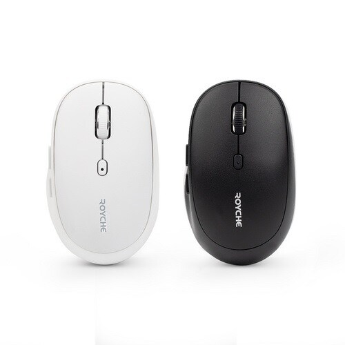

무선 마우스, 사무용·버티컬·게이밍 뭐가 다를까
무선 마우스를 새로 사려고 알아보면 사무용, 버티컬형, 게이밍용 중에 뭐가 나한테 맞는지 헷갈리실 수 있어요. 손목이 걱정되는 분, 노트북 여러 대를 오가며 쓰는 분, 게임에서 반응속도를 신경 쓰는 분이 있어요. 이 셋이 살펴봐야 할 기준은 서로 달라요.
이 글은 제품 하나를 정해서 추천하기보다 상황별로 먼저 확인할 기준을 짚어요. 손목이 걱정되면 버티컬형, 여러 기기를 자주 오가면 멀티페어링부터 봐요. 게임을 자주 하면 저지연 규격까지, 이 순서대로 확인해요.
이 글에 나오는 가격은 2026년 8월 8일에 다나와와 제조사 직영몰을 다시 조회한 값이에요. 실시간 최저가가 아니라 조회 시점에 관찰된 가격이라 이후 달라질 수 있어요.
무선 마우스, 용도별로 뭘 먼저 봐야 하나요?
버티컬형은 손목 각도, 멀티페어링 사무용은 기기 전환 방식, 게이밍용은 위치 정보를 보고하는 속도부터 확인하면 돼요.
게이밍용에서 이 속도를 폴링레이트, 또는 보고율이라고 불러요. 세 유형 모두 무선이라는 점은 같아요. 다만 손이 마우스를 누르는 각도나 기기를 옮겨 쓰는 방식, 반응속도를 다루는 방식은 서로 달라요.
| 구분 | 먼저 볼 것 | 이 글이 보는 예시 모델 |
|---|---|---|
| 버티컬형(인체공학) | 손목이 세워지는 각도, 무소음 스위치 여부 | 로이체 RX-750V, 위글위글X앱코 버티컬 마우스 |
| 멀티페어링 사무용 | 블루투스·전용 동글 겸용 여부 | 로이체 RX-700TR |
| 게이밍용 | 폴링레이트(보고율) | VXE R1 SE+ |
표: 용도별 무선 마우스 확인 포인트
아래에서 상황별로 하나씩 짚어볼게요.
손목이 걱정되면 어떤 마우스를 봐야 하나요?
손목을 세워 잡는 구조인 버티컬 마우스가 정답이에요.
일반 마우스는 손바닥이 아래를 향한 채 마우스를 눌러요. 버티컬 마우스는 본체가 옆으로 세워져 있어서, 쥐었을 때 손이 악수하듯 세로에 가까운 각도가 되도록 설계됐어요.
다나와에 등록된 로이체 RX-750V는 버티컬(손목보호) 구조의 무선 마우스예요. 무소음 스위치를 적용했어요. 블루투스와 전용 동글을 함께 지원하는 멀티페어링 기능도 있어요. 색상은 레몬아이보리와 핑크예요. 2026년 8월 8일 다나와 기준 가격은 2만6900원이었어요.
위글위글X앱코 버티컬 마우스는 캐릭터 브랜드 위글위글과 주변기기 제조사 앱코가 함께 낸 인체공학 버티컬 마우스예요. 위글위글 공식몰(아이보리 색상) 기준 판매가는 4만9800원이었어요. 소비자가는 5만5000원으로 표시돼 있었어요.
| 항목 | 로이체 RX-750V | 위글위글X앱코 버티컬 마우스 |
|---|---|---|
| 가격(2026.08.08 조회) | 2만6900원 · 다나와 | 4만9800원 · 위글위글 공식몰 |
| 구조 | 버티컬(손목보호), 무소음 스위치 | 버티컬, 인체공학 설계 |
표: 버티컬형 무선 마우스 2종 비교
두 제품 모두 버티컬 구조라는 공통점이 있지만, 위글위글X앱코 쪽은 캐릭터 브랜드 콜라보라는 점에서 로이체 RX-750V와 차이가 나요. 손목이 실제로 얼마나 편안한지는 사람마다 다르게 느낄 수 있어서, 이 글은 제품 설명에 나온 구조까지만 확인했어요.
노트북 여러 대를 오가면 뭘 봐야 하나요?
하나의 마우스를 여러 기기에 등록해 두고 버튼으로 전환하는 멀티페어링 기능부터 보면 돼요.
로이체 RX-700TR은 블루투스 5.0과 전용 동글을 함께 지원하는 무선겸용 마우스로 소개돼 있어요. 무소음 스위치를 적용했고, 화이트·블랙·핑크 3가지 색상으로 나와요.
2026년 8월 8일 다나와 기준 최저가는 2만2000원이었어요(쿠팡 판매).

로이체 RX-700TR 화이트·블랙 색상 — 다나와 상품 이미지예요.
이미지 출처: 다나와 — ROYCHE RX-700TR 상품정보 · 네이버 본문엔 받아서 재업로드 권장
| 항목 | 내용 |
|---|---|
| 가격(2026.08.08 조회) | 2만2000원 · 다나와 최저가(쿠팡) |
| 연결 방식 | 블루투스 5.0 + 전용 동글 겸용(무선겸용), 멀티페어링 |
| 색상 | 화이트 · 블랙 · 핑크 |
표: 로이체 RX-700TR 확인 사항 (다나와 제품정보 기준, 2026.08.08 조회)
발주 자료에 담긴 8월 7일 시점 관찰가는 2만4900원이었는데, 하루 사이에도 최저가가 바뀔 수 있다는 걸 보여주는 예예요.
게임을 자주 하면 뭘 확인해야 하나요?
1초 동안 위치 정보를 몇 번 보고하는지부터 확인하면 돼요.
게이밍 마우스에서는 이 수치를 폴링레이트라고 불러요. 폴링레이트가 1000Hz면 1초에 1000번, 다시 말해 1밀리초(ms)마다 한 번씩 위치를 보고한다는 뜻이에요.
VXE R1 SE+는 국내에서 (주)브라보텍의 주변기기 브랜드 펀키스가 공식 런칭한 제품이에요. 런칭 당시 이름은 'ATK GEAR x VXE'였어요. 유통사 공지에는 이 제품군이 '잠자리 마우스'라는 애칭으로 불린다고 적혀 있어요.
다나와 제품정보 기준으로 R1 SE+는 18,000DPI, 1000Hz 폴링레이트, 무게 55g으로 등록돼 있어요. 2026년 8월 8일 다나와 최저가는 2만5900원이었어요.
| 항목 | 내용 |
|---|---|
| DPI | 18,000 |
| 폴링레이트 | 1000Hz |
| 무게 | 55g |
| 가격(2026.08.08 조회) | 2만5900원 · 다나와 최저가 |
표: VXE R1 SE+ 확인 사항 (다나와 제품정보 기준, 2026.08.08 조회)
로지텍 공식 기술 페이지(LIGHTSPEED)는 무선 게이밍 마우스 기술을 유선 연결과 비교하는 자료를 공개했어요. 원문은 이 기술을 "FASTER THAN WIRED"라고 표현하며, "Logitech G took on the challenge to innovate wireless data transfer to the point where it beats most competitors' wired connections(로지텍 G는 대부분의 경쟁사 유선 연결보다 빠른 수준까지 무선 데이터 전송을 개선하는 데 도전했다)"라고 적었어요.
다만 이 인용문은 로지텍이 공개한 자사 소개 문구이고, 1000Hz 폴링레이트는 다나와 제품정보 기준이에요. 두 수치를 같은 기준으로 나란히 비교할 근거는 이 글에서 찾지 못했어요.
그럼 저는 어떤 마우스를 골라야 하나요?
손목 각도, 기기 전환, 반응속도 중 뭘 가장 먼저 보느냐에 따라 갈려요.
| 조건 | 모델 | 근거 |
|---|---|---|
| 손목 각도가 걱정되면 | 로이체 RX-750V, 위글위글X앱코 버티컬 마우스 | 둘 다 버티컬 구조로 손을 세워 잡도록 설계됨 |
| 노트북 여러 대를 자주 오가면 | 로이체 RX-700TR | 블루투스+동글 겸용 멀티페어링 지원 |
| 게임에서 반응속도를 중시하면 | VXE R1 SE+ | 다나와 제품정보 기준 1000Hz 폴링레이트 |
표: 상황별 확인 기준
세 상황 모두 무선 연결이라는 공통점은 같지만, 확인해야 할 기준 자체가 달라요. 하나를 정하기 전에 위 표의 확인 포인트부터 짚어보면 도움이 돼요.
자주 묻는 질문
Q. 버티컬 마우스는 무조건 손목에 좋은가요?
이 글에서 확인한 공식 정보 범위에서는 그렇게 단정할 수 없어요. 로이체·위글위글X앱코 판매 페이지에는 버티컬 구조가 손목 각도 부담을 줄이도록 설계됐다는 설명만 있어요. 의학적 효과를 보증하는 문구는 없었어요.
Q. 게이밍 마우스의 폴링레이트가 높으면 무조건 좋은가요?
폴링레이트가 높을수록 초당 위치 정보를 더 자주 보고해요. 다만 이 글이 확인한 자료 범위에서는 폴링레이트 수치와 실제 게임 체감 차이를 직접 연결해 설명한 공식 자료는 찾지 못했어요.
참고한 곳
· 다나와 — 로이체 RX-750V 검색 결과
· 다나와 — ROYCHE RX-700TR 상품정보
· 다나와 — ATK VXE R1 SE+ 상품정보
· 위글위글 공식몰 — 디지털 카테고리(버티컬 마우스 판매가)
· 로지텍 공식 — LIGHTSPEED 기술 페이지
· 브라보텍(펀키스) 공지 — ATK GEAR x VXE 국내 공식 런칭
하루 정리
· 이 글의 가격은 2026년 8월 8일 다나와·위글위글 공식몰 조회 기준이에요.
· 로이체 RX-750V 2만6900원, 위글위글X앱코 버티컬 마우스 4만9800원, 로이체 RX-700TR 2만2000원, VXE R1 SE+ 2만5900원으로 관찰됐어요.
· 손목 각도가 걱정되면 버티컬형, 노트북을 자주 오가면 멀티페어링 사무용, 게임 반응속도가 중요하면 폴링레이트가 높은 게이밍용부터 확인하면 돼요.
로지텍 공식 자료는 라이트스피드 무선 기술을 유선보다 빠르다고 소개하지만, 그 자료 속 수치와 VXE R1 SE+의 폴링레이트를 같은 기준으로 비교할 근거는 찾지 못했어요.